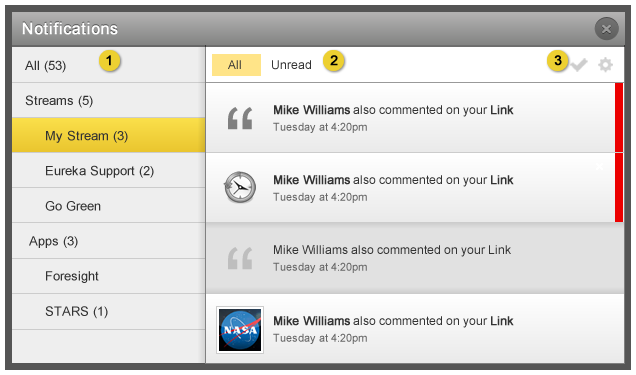

Home > Product Specification > Old Spec > UPDATE Manage and receive notifications
UPDATE Manage and receive notifications
MERGE Actions on an activity
Old Spec
This page will replace the 0.9 specification for Manage and receive notifications when Eureka Stream 1.0 is released. This product specification is a work in process. In the 1.0 release, the ability to receive notifications for activities posted to groups you are following will be added. Also, the post or comment text will be inlcluded in the emails that are sent.
Overview
Knowledge workers can choose to receive notifications on the posting of new activity and comments and the addition of new followers.
Conditions of satisfaction
- The system must generate a notification for a knowledge worker when an activity is posted by a colleague to their stream.
- The system must generate a notification for a knowledge worker when a colleague likes an activity posted by the knowledge worker.
- The system must generate a notification for a knowledge worker when a comment is posted to any activity within their stream.
- The system must generate a notification for a knowledge worker when a comment is posted to an activity posted by the knowledge worker.
- The system must generate a notification for a knowledge worker when a comment is posted to an activity that the knowledge worker has commented on.
- The system must generate a notification for a knowledge worker when a comment is posted to an activity that the knowledge worker has saved.
- The system must generate a notification for a knowledge worker when a colleague follows him.
- The system must generate a notification for a knowledge worker when an activity is posted by a colleague to a group the knowledge worker has joined.
- The system must generate a notification for a knowledge worker when a group official posts an announcement to a group the knowledge worker has joined.
- The system must generate a notification for a knowledge worker when access to a private group is approved or denied.
- The system must generate a notification for a group coordinator when an activity is posted by a colleague to his group stream.
- The system must generate a notification for a group coordinator when a colleague follows his group.
- The system must generate a notification for a group coordinator when a pending membership request is submitted to a private group.
- The system must generate a notification for a group coordinator when a pending group request is approved or denied.
- The system must generate a notification for an organization coordinator when activity is flagged as inappropriate.
- The system must generate a notification for an organization coordinator when there is a pending group creation request.
- The knowledge worker must have the option to receive notifications via email.
- The knowledge worker must have the option to receive notifications in the app.
- Eureka admins must be able to send notifications to all users from an Admin screen.
- Eureka admins must be able to speficy the notification text (limited to 250 characters) and target link.
- Eureka connect developers must be able to send notifications to a particular user from an exposed API
- The eureka connect developer must be able to mark a notification being
sent as high priority
- The knowledge worker must be able to distinguish high priority
notifications from normal notifications
- The knowledge worker must be alerted when high priority notifications
are unread differently than normal unread notifications.
- The knowledge worker must be able to filter notifications by source (stream of app of notification origin)
- The knowledge worker must be able to see the count of notifications by source
- The knowledge worker must be able to view only high priority notifications
- The knowledge worker must be able to filter between “all” and “unread” notifications
- The knowledge worker must be able to mark all notifications as read
- The knowledge worker must mark a notification individually as read only by clicking it
- The knowledge worker must be able to delete an individual notification
- The knowledge worker must be able to get to the notifications settings page from the notifications window
- The knowledge worker must be able to unsubscribe to a type of notification from the notifications window
User experience
Managing Notifications

- Clicking the check box enables and disables email notifications.
- Click the check box enables and disables in-application notifications.
- Logged in user’s email address.
- Saves the edits made to the form and displays a feedback message at the top of the page: “Settings saved” with a close link at the top of the page.
- Discards the changes made to the form and returns the knowledge worker to the start page.
Manage Email Notifications Modal

- Click Unsubscribe to stop receiving email notifications from groups you have joined. This is the default setting for all groups you have joined.
- Click Subscribe to start receiving email notifications from groups you have joined.

- Filters on the left allow the user to filter between all notifications or
notifications for a particular stream or app source. Clicking on “Stream” or
“Apps” will show all notifications in those sub groups.
- Notifications can be filtered to show all or unread notifications. Read
notifications are show as darker in color (in picture above, the third
notification is “read”). High Priority notficiations are always sorted to the
top. A notification is only marked as read if it is clicked or the mark all as
read button is clicked (more details below).
- Buttons on the right allow the user to mark all as read or go to the
settings page.

- When hovered over, the check box turns into a Mark All As Read button. When
clicked all notifications in the current view are marked as read.

- When hovered over, the notification shows two icons, one for delete and one
for stop. When the delete button is hovered it shows the complete text of the
button. When the user clicks it, the notification is completely removed from
the system.

- Users are able to unsubscribe from a notification type right from the
notification window by clicking on the Stop icon. When hovered over, it
displays the full text. When clicked the notification type will be unscribed
for in-app and email.
Notes:
- Notifications are retained for 14 days.
- A single notification is generated based on any given event. The type of message sent is picked based on the following order: 1) Authorship, 2) Who’s stream is updated; 3) scenario for commenting. For example, in the scenario where a knowledge worker posts a message to his stream and comments on his message, the knowledge worker would recieve message #2 instead of message #4 since the original message was generated by the knowledge worker.
- Emails are non-recursive. For example, an org coordinator will not receive an email when a message is posted to a group in the organization.
Notification icon


- The notification icon in it’s default state with 0 unread notifications.
When clicked the notification modal still opens to All Items by default.
- The notification icon with 23 unread items, none of which are high
priority.
- The notification icon with 23 unread items, at least one of which is high
priority.
Email Notifications

- Email is sent to a knowledge worker when a message is posted to your stream. The word ‘message’ is replaced with ‘link’ when a link is posted and the link name is displayed after the message in blue. Refer to #6 for an example.
Notes:
- A single email is generated based on any given event. The type of message sent is picked based on the following order: 1) Authorship, 2) Who’s stream is updated; 3) scenario for commenting. For example, in the scenario where a knowledge worker posts a message to his stream and comments on his message, the knowledge worker would recieve message #2 instead of message #4 since the original message was generated by the knowledge worker.
- Emails are non-recursive. For example, an org coordinator will not receive an email when a message is posted to a group in the organization.

- Footer is the same for all emails.
Activity Not Found Message

- This message is displayed when the activity hyperlinked in a notficiation or email no longer exists.
Test plans
Knowledge Worker
- Action: Confirm the option to receive notifications via email and in-app notification
- Verify all email and in-app notifications are enabled by default.
- Action: Confirm an email and in-app notification are generated for a knowledge worker when a message or link is posted by a colleague to his stream
- Verify in-app notification count increases by one
- Verify an in-app notification exists
- Verify the in-app notifcation contains the post type, a hyperlink to the colleague’s profile, a hyperlink to the message or link, and a time stamp
- Verify an email notication was sent
- Verify the email notification was sent from the Eureka support email address; the subject line specifies a colleague has posted to the knowlege workers stream; the text of the message is included in the body of the email; and a link to the post is present in the email.
- Action: Confirm an email and in-app notification are generated for a knowledge worker when a colleague likes an activity posted by the knowledge worker
- Verify in-app notification count increases by one
- Verify an in-app notification exists
- Verify the in-app notification contains the likee type, a hyperlink to the colleague’s profile, a hyperlink to the posted activity, and a time stamp
- Verify an email notification was sent
- Verify the email notification was sent from the Eureka support email address; the subject line specifies a colleague likes a posted activity; the text of the activity is included in the body of the email; and a link to the post is present in the email.
- Action: Confirm an email and in-app notification are generated for a knowledge worker when a comment is posted to any activity within his stream
- Verify in-app notification count increases by one
- Verify an in-app notification exists
- Verify the in-app notification contains the comment type, a hyperlink to the profile of the comment’s author, a hyperlink to the activity, and a time stamp
- Verify an email notification was sent
- Verify the email notification was sent from the Eureka support email address; the subject line specifies a colleague has commented on a posted in the knowlege worker’s stream; the text of the comment and post is included in the body of the email; and a link to the post and comments is present in the email.
- Action: Confirm an email and in-app notification are generated for a knowledge worker when a comment is posted to an activity posted by the knowledge worker
- Verify in-app notification count increases by one
- Verify an in-app notification exists
- Verify the in-app notification contains the comment type, a hyperlink to the profile of the comment’s author, a hyperlink to the activity, a link to the profile where the original activity was posted, and a time stamp
- Verify an email exists notification is sent
- Verify the email notification was sent from the Eureka support email address; the subject line specifies a colleague has commented to the knowledge worker’s post; the text of the comment is included in the body of the email; and a link to the post and comments is present in the email.
- Action: Confirm an email and in-app notification are generated for a knowledge worker when a comment is posted to an activity that the knowledge worker has commented on
- Verify in-app notification count increases by one
- Verify an in-app notification exists
- Verify the in-app notification contains the comment type, a hyperlink to the profile of the comment’s author, a hyperlink to the activity, a link to the profile where the original comment is located (unless located on the knowlegde worker’s own stream), and a time stamp
- Verify an email notification was sent
- Verify the email notification was sent from the Eureka support email address; the subject line specifies a colleague has commented to the same activity as the knowledge worker; the text of the comment is included in the body of the email; and a link to the post and comments is present in the email.
- Action: Confirm an email and in-app notification are generated for a knowledge worker when a comment is posted to an activity that the knowledge worker has saved
- Verify in-app notification count increases by one
- Verify an in-app notification exists
- Verify the in-app notification contains the comment type, a hyperlink to the profile of the comment’s author, a hyperlink to the actvity, and a time stamp
- Verify an email notification was sent
- Verify the email notification was sent from the Eureka support email address; the subject line specifies a colleague has commented on a saved activity; the text of the comment is included in the body of the email; and a link to the post and comments is present in the email.
- Action: Confirm an email and in-app notification are generated for a knowledge worker when a colleague follows him
- Verify in-app notification count increases by one
- Verify an in-app notification exists
- Verify the in-app notification contains the group membership type, a hyperlink to the profile of the colleague following the knowledge worker’s stream, and a time stamp
- Verify an email notification was sent
- Verify the email notification was sent from the Eureka support email address; the subject line specifies a colleague is following the knowledge worker; and a link to the colleague’s profile is present in the email.
- Action: Confirm an email and in-app notification are generated for a knowledge worker when an activity is posted by a colleague to a group the knowledge worker has joined
- Verify in-app notification count increases by one
- Verify an in-app notification exists
- Verify the in-app notification contains the post type, a hyperlink to the profile of the post’s author, a hyperlink to the profile of the group where the activity was posted, a hyperlink to the activity, and a time stamp
- Verify an email notification was sent
- Verify the email notification was sent from the Eureka support email address; the subject line specifies a colleague as posted to a group that the knowledge worker is a member of; the text of the message/activity is included in the body of the email; and a link to the post is present in the email.
- Action: Confirm an email and in-app notification are generated for a knowledge worker when access to a private group is approved or denied
- Verify in-app notification count increases by one
- Verify an in-app notification exists
- Verify the in-app notification contains the group membership type, name of the group, and a time stamp
- Verify an email notification was sent
- Verify the email notification was sent from the Eureka support email address; the subject line specifies a the group name and whether access was approved or denied; the body of the email states that request has been approved or denied; and a link to the group profile (if approved) is present in the email.
- Action: Confirm the option to opt out of receiving notifications via email and in-app
- Verify that an email and in-app notification are not generated for a knowledge worker when an activity is posted by a colleague to their stream.
- Verify that an email and in-app notification are not generated for a knowledge worker when a colleague likes an activity posted by the knowledge worker.
- Verify that an email and in-app notification are not generated for a knowledge worker when a comment is posted to any activity within their stream.
- Verify that an email and in-app notification are not generated for a knowledge worker when a comment is posted to an activity posted by the knowledge worker.
- Verify that an email and in-app notification are not generated for a knowledge worker when a comment is posted to an activity that the knowledge worker has commented on.
- Verify that an email and in-app notification are not generated for a knowledge worker when a comment is posted to an activity that the knowledge worker has saved.
- Verify that an email and in-app notification are not generated for a knowledge worker when a colleague follows him.
- Verify that an email and in-app notification are not generated for a knowledge worker when an activity is posted by a colleague to a group the knowledge worker has joined.
- Verify that an email andin-app notification are not generated for a knowledge worker when access to a private group is approved or denied.
- **Action: Confirm Notification count decreases as items are read
- Verify notification count is the sum total of all unread notifications
- Verify when clicked a notification is marked as read and the count
decrements
- Verify the Mark All As Read button clears out all notifications in the
selected filter and decreases the count appropriately.
- **Action: Confirm Filters Work in Notification Modal
- Verify selecting a stream or app filters out notifications to just that
source
- Verify all sources with unread notifications show up, and sources
without unread notifications don’t show up
- Verify clicking “All” shows all notifications read or unread
- Verify clicking “Unread” shows only unread notifications
- **Action: Confirm user management of notifications
- Verify clicking on the delete button removes the notification
- Verify clicking on the stop button unsubscribes to that type of
notification
Group Coordinator
- Action: Execute same tests as Knowledge Worker
- Verify tests executed successfully
- Action: Confirm the option to receive notifications via email and in-app notification
- Verify all email and in-app notifications are enabled by default.
- Action: Confirm an email and in-app notification are generated for a group coordinator when an activity is posted by a colleague to his group stream
- Verify in-app notification count increases by one
- Verify an in-app notification exists
- Verify the in-app notification contains the post type, a hyperlink to the profile of the post’s author, a hyperlink to the activity, a hyperlink to the group profile, and a time stamp
- Verify an email notification was sent
- Verify the email notification was sent from the Eureka support email address; the subject line specifies a colleague as posted to the group profile; the text of the message is included in the body of the email; and a link to the post is present in the email.
- Action: Confirm an email and in-app notification are generated for a group coordinator when a colleague follows his group
- Verify in-app notification count increases by one
- Verify an in-app notification exists
- Verify the in-app notification contains the group membership type, a hyperlink to the colleague’s profile, a hyperlink to the group profile, and a time stamp
- Verify an email notification was sent
- Verify the email notification was sent from the Eureka support email address; the subject line specifies a colleague is following (has joined) the group; and a link to the colleague’s profile is present in the email.
- Action: Confirm an email and in-app notification are generated for a group coordinator when a pending membership request is submitted to a private group
- Verify in-app notification count increases by one
- Verify an in-app notification exists
- Verify the in-app notification contains the group membership type, a hyperlink to the profile of the employee requesting membership, a hyperlink to the group profile, and a time stamp
- Verify an email notification was sent
- Verify the email notification was sent from the Eureka support email address; the subject line specifies a colleague has requested to join the group; the body of the email explains how to approve or deny the request; and a link to the admin tab of the group profile is present in the email.
- Action: Confirm an email and in-app notification are generated for a group coordinator when a pending group request is approved or denied
- Verify in-app notification count increases by one
- Verify an in-app notification exists
- Verify the in-app notification contains the group management type, a hyperlink to the group profile, a hyperlink to the organization profile, and a time stamp
- Verify an email notification was sent
- Verify the email notification was sent from the Eureka support email address; the subject line specifies whether the request was approved or denied; and the body of the email states whether the request has been approved or denied.
- Action: Confirm the option to opt out of receiving email and in-app notifications
- Verify that an email and in-app notification are not generated for a group coordinator when an activity is posted by a colleague to his group stream.
- Verify that an email and in-app notification are not generated for a group coordinator when a colleague follows his group.
- Verify that an email and in-app notification are not generated for a group coordinator when a pending membership request is submitted to a private group.
- Verify that an email and in-app notification are not generated for a group coordinator when a pending group request is approved or denied.
Organization Coordinator
- Action: Execute same tests as Knowledge Worker
- Verify tests executed successfully
- Action: Execute same tests as Group Coordinator
- Verify tests executed successfully
- Action: Confirm the option to receive notifications via email and in-app notification
- Verify all email and in-app notifications are enabled by default.
- Action: Confirm an email and in-app notification are generated for an organization coordinator when activity is flagged as inappropriate
- Verify in-app notification count increases by one
- Verify an in-app notification exists
- Verify the in-app notification contains the flag type, hyperlink to the profile of the employee that flagged the activity, a hyperlink to the organization’s Admin page, a hyperlink to the organization’s profile, and a time stamp
- Verify an email notification was sent
- Verify the email notification was sent from the Eureka support email address; the subject line specifies a colleague has flaged a post to the organization as inappropriate; the body of the email states the colleague flagged a post as inappropriate; and a link to the the admin tab of the organization profile is present in the email.
- Action: Confirm an email and in-app notification are generated for an organization coordinator when there is a pending group creation request
- Verify in-app notification count increases by one
- Verify an in-app notification exists
- Verify the in-app notification contains group managemnt type, a hyperlink to the group profile, a hyperlink to the organization’s Admin page, a hyperlink to the organization’s profile
- Verify an email notification was sent
- Verify the email notification was sent from the Eureka support email address; the subject line specifies the group name and that it is pending approval; the group name and that it is pending approval is included in the body of the email; and a link to the admin tab of the organizational profile is present in the email.
- Action: Confirm the option to opt out of receiving emails and in-app notifications
- Verify that an email and in-app notification are not generated for an organization coordinator when activity is flagged as inappropriate.
- Verify that an email and in-app notification are not generated for an organization coordinator when there is a pending group creation request.
Root Organization Coordinator
- Action: Execute same tests as Knowledge Worker
- Verify tests executed successfully
- Action: Execute same tests as Group Coordinator
- Verify tests executed successfully
- Action: Execute same tests as Organization Coordinator
- Verify tests executed successfully
| PAGE CONTENTS
Version 1.2
Documentation is also available for all of the following versions:
0.9 | 1.0 | 1.1
|